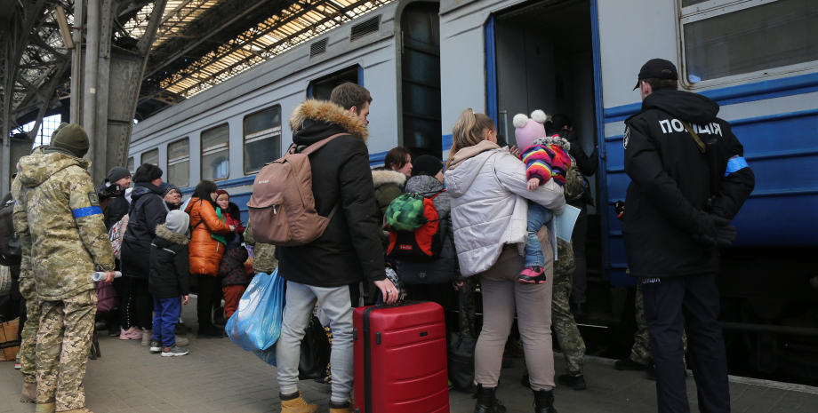

Внутрішньо переміщені особи
Внутрішньо переміщені особи (ВПО) – особи, які переїхали до іншого регіону України, аби врятуватися від війни.
Підтвердження цього статусу – взяття на облік ВПО.
Куди звернутися?
- Центр надання адміністративних послуг;
- Сільська/міська рада за місцем нового проживання;
- Відділ соціального захисту населення.
Хто може подати заяву?
- Особи від 14 років;
- Від імені дитини, молодшої за 14 років, звертаються батьки або родичі. Якщо дитина без супроводу дорослих, заяву подає представник органу опіки.
Згідно з Указом Президента на отримання довідки ВПО мають право особи, які перемістилася з території активних бойових дій. Це: Чернігівська, Сумська, Харківська, Херсонська, Миколаївська, Запорізька, Донецька, Луганська, Житомирська, Одеська, Волинська, Дніпропетровська, Київська області та місто Київ.
Пакет документів:
- заява;
- паспорт або інший документ, що посвідчує особу;
- свідоцтво про народження (для дітей);
- підтвердження адреси, з якої перемістилися. Це може бути:
- прописка в паспорті;
- військовий квиток;
- трудова книжка;
- свідоцтво про право власності на рухоме або нерухоме майно;
- свідоцтво про освіту тощо.
Яка допомога ВПО?
Гроші:
- 2 тис. грн. на особу;
- 3 тис. грн. на дитину до 18 років або людину з інвалідністю.
Виплати будуть здійснюватися щомісяця + 1 місяць після припинення воєнного стану.
Робота:
Роботодавцям держава дає щомісячну компенсацію у 6500 грн. за кожного найманого працівника-переселенця.
Житло:
Держава компенсує комунальні витрати родинам, які дають притулок переселенцям – 450 грн. на кожну особу щомісяця.
ВПО мають право на:
- безкоштовне тимчасове проживання впродовж 6 місяців (за умови оплати комунальних послуг) з моменту взяття на облік ВПО;
- продовження здобуття певного рівня освіти на території нового місця проживання;
- отримання соціальної стипендії студентам-переселенцям;
- отримання соціальних та адміністративних послуг;
- отримання соціальних виплат і пенсій;
- реєстрацію підприємницької діяльності за місцем нового проживання.
З яких причин можуть скасувати дію довідки ВПО?
Довідка ВПО – безстрокова, але може бути скасованою, якщо: